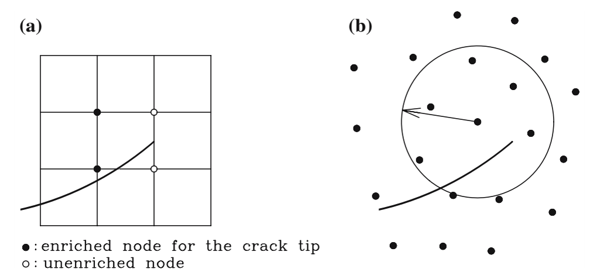
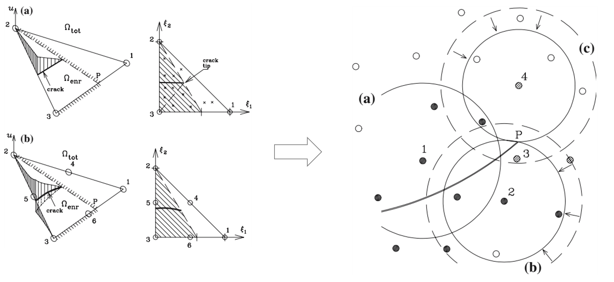
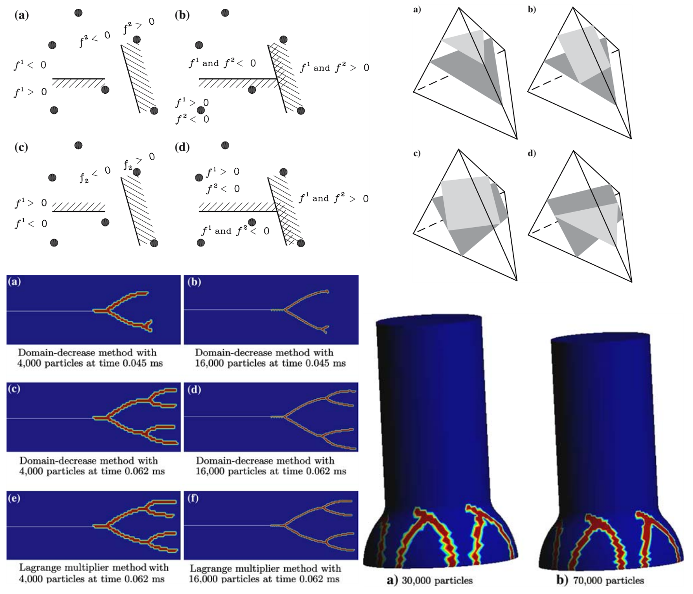

Why Extend XFEM into a Meshfree Method?
From element enrichment to XEFG: what changes when the approximation is built from particles and domains of influence
Computational Fracture Series: ← Overview · ← XFEM · Article 3 of 7 · Next: Multiple cracks →
XFEM changed an important assumption in computational fracture.
A crack did not have to coincide with the finite element mesh.
Instead, the approximation could be enriched so that the discontinuity was represented independently of the element boundaries.
That immediately raises another question:
If the essential idea is enrichment of the approximation space, why should we require a finite element mesh at all?
This question led naturally to the extended element-free Galerkin method (XEFG).
In my work with Timon Rabczuk and collaborators, we investigated how the same partition-of-unity idea used in XFEM could be introduced into a meshfree approximation for cohesive fracture, dynamic crack propagation, and eventually three-dimensional crack initiation, branching, and junction.
At first sight, the transition seems simple:
XFEM
finite element shape functions
+
enrichment
↓
XEFG
meshfree shape functions
+
enrichmentBut the mechanics of the approximation are not identical.
The important difference is the support.
From elements to domains of influence
In a finite element method, the approximation is organized through elements and their nodes.
In an element-free Galerkin (EFG) method, the approximation is constructed from particles or nodes whose influence extends over surrounding domains.
A meshfree approximation can be written schematically as
\[ \mathbf{u}^h(\mathbf{x}) = \sum_{I=1}^{n} \Phi_I(\mathbf{x})\mathbf{u}_I, \]
where \(\Phi_I\) are meshfree shape functions, often obtained from a moving-least-squares construction.
There is no conventional finite element connectivity defining the interpolation.
Instead, each particle contributes over its domain of influence.
This already provides geometric flexibility.
But an ordinary meshfree approximation is still generally smooth across the support domain.
A crack again introduces information that the ordinary approximation does not contain:
\[ [\![\mathbf{u}]\!] \neq \mathbf{0}. \]
So meshfree approximation alone does not solve the fracture problem.
It also needs a way to represent the discontinuity.
The same enrichment idea survives
The enriched meshfree approximation can be written conceptually as
\[ \mathbf{u}^h(\mathbf{x}) = \sum_I \Phi_I(\mathbf{x})\mathbf{u}_I + \sum_{J\in\mathcal{N}_{\mathrm{enr}}} \Phi_J(\mathbf{x}) \Psi_J(\mathbf{x}) \mathbf{a}_J. \]
This looks very similar to XFEM.
That similarity is important.
The fundamental concept is not tied to a particular finite element.
It is the idea that the approximation can be augmented by functions carrying information about a discontinuity.
The background approximation changes from \(N_I\) to \(\Phi_I\).
The enrichment principle remains.
XFEM and XEFG are two implementations of the same broader idea: the discretization supplies the background approximation, while enrichment supplies information that the background approximation cannot represent.
But a particle support is not an element
This is where XEFG becomes interesting.
A finite element has a sharply defined geometric domain.
A meshfree particle has a domain of influence.
A crack may interact with that support in several ways:
support not cut by crack
↓
ordinary particle
support completely cut by crack
↓
discontinuous enrichment is natural
support partially cut by crack
↓
crack-tip treatment becomes importantThis distinction is central to XEFG.
A crack may pass through only part of a particle’s domain of influence. The crack tip may lie inside that support. The two sides of the support therefore cannot simply be treated as completely disconnected.
The problem is analogous to the crack-tip issue in XFEM, but its geometry is expressed through overlapping support domains rather than element connectivity.
This is why moving from XFEM to XEFG was not just a matter of replacing one shape-function symbol with another.

Figure Figure 1 shows the key geometric difference between XFEM and XEFG. In XFEM, we usually ask how a crack cuts an element and its associated nodal supports. In XEFG, the corresponding question is how the crack cuts overlapping domains of influence. The physical discontinuity is the same, but the bookkeeping of the approximation changes.
Why meshfree methods were attractive for fracture
Fracture creates evolving geometry.
Meshfree methods were attractive because they already reduce dependence on fixed element connectivity.
This suggested several potential advantages for difficult crack problems:
- large changes in crack geometry,
- multiple cracks,
- branching,
- crack junctions,
- large deformation,
- three-dimensional crack surfaces,
- and situations where maintaining a high-quality conforming mesh would be difficult.
However, geometric freedom alone is not enough.
The approximation still has to satisfy the correct crack kinematics.
That is why enrichment remained important.
The progression was therefore not
FEM is bad
→ use meshfreebut rather
fracture needs geometry-independent representation
↓
XFEM enriches finite elements
↓
meshfree approximation offers another flexible background
↓
XEFG enriches that background as wellCohesive fracture again changes the crack-tip problem
As discussed in the previous article, cohesive fracture differs from classical traction-free LEFM.
Across the cohesive crack,
\[ \mathbf{t} = \mathbf{t}\left([\![\mathbf{u}]\!]\right), \]
and the crack opening develops progressively as cohesive traction decreases.
At the cohesive crack tip, the opening must approach zero.
In XEFG, this means that the enriched displacement jump has to vanish appropriately within particle supports intersected only partially by the crack.
Our early XEFG work focused strongly on this issue.
A support completely divided by a crack can naturally receive a discontinuous enrichment.
A support containing the crack tip requires a representation that allows the discontinuity to terminate.
This led to formulations designed specifically for cohesive cracks rather than automatically importing the classical LEFM branch functions.
Why avoid branch enrichment?
Classical XFEM commonly uses crack-tip branch functions motivated by the asymptotic solution of linear elastic fracture mechanics.
When the physical model is cohesive fracture, however, the near-tip field is regularized by the cohesive zone.
This raises a simple but important question:
Should the numerical approximation contain a singular crack-tip field when the constitutive fracture model does not require that singularity?
In our work on extended meshfree methods, we explored formulations without branch enrichment for cohesive cracks.
This was important for two reasons.
First, it simplified the treatment of arbitrary crack propagation.
Second, it made the approximation more closely aligned with the assumed cohesive mechanics.
The general lesson is broader than XEFG:
Enrichment should introduce useful physical information, not unnecessary mathematical structure.
An enrichment function is a modeling decision.
It should be justified by the solution behavior we expect.

Figure Figure 2 illustrates an important modeling choice. If the cohesive law already regularizes the crack-tip response, inserting a classical singular asymptotic field is not automatically necessary. The enrichment should supply the missing kinematics, not mathematical structure that the assumed fracture model does not require.
The crack is still independent of the background approximation
Just as in XFEM, XEFG separates several objects that conventional fracture discretizations tend to merge:
particles
→ background approximation
domains of influence
→ local support of that approximation
crack geometry
→ evolving discontinuity
enrichment
→ discontinuous kinematics
cohesive law
→ traction-opening relation
propagation criterion
→ evolution of the crackThis separation becomes particularly useful for complex fracture patterns.
The particles need not be rearranged every time the crack advances.
Instead, the crack geometry and the enrichment status of the affected supports are updated.
The computational problem shifts from remeshing to managing enriched supports and evolving discontinuity geometry.
Numerical integration does not disappear
Meshfree does not mean integration-free.
The weak form still contains domain integrals.
And once a crack cuts through a support or integration cell, the integrands can be discontinuous.
Therefore numerical integration must still respect the crack geometry.
This is an important recurring theme in enriched methods:
A geometry-independent approximation does not mean that geometry becomes irrelevant.
The crack location still matters for:
- deciding which particles are enriched,
- evaluating enrichment functions,
- determining the two sides of the discontinuity,
- integrating discontinuous fields,
- applying cohesive tractions,
- and propagating the crack.
The mesh may disappear as the primary representation of topology, but geometric bookkeeping remains essential.
Three dimensions reveal the real challenge
The advantage of a flexible crack representation becomes more visible in three dimensions.
In two dimensions, a crack is essentially a line with one or more tips.
In three dimensions, a crack is a surface bounded by a crack front.
The crack front may curve.
Different points along it may propagate in different directions.
Two crack surfaces may meet.
A crack may branch.
The topology may change.
Our later XEFG work extended the method to continuous three-dimensional crack initiation, propagation, branching, and junction in static and dynamic problems.
The difficulty was not simply increasing the number of displacement components from two to three.
The geometric object being tracked had fundamentally changed.
2D
crack line
+ crack tip
3D
crack surface
+ crack front
+ evolving surface topologyThis is where the separation between background approximation and crack geometry becomes especially valuable.

Figure Figure 3 shows why three-dimensional fracture is qualitatively harder than its two-dimensional counterpart. The numerical method is no longer tracking only a crack-tip point. It must maintain a physically meaningful surface and crack front while that geometry evolves through the background approximation.
Crack junctions point to the next problem
When two cracks meet, the difficulty is no longer merely geometric. The topology of the discontinuity network changes.
An enriched meshfree representation can update the crack description and the affected support domains without forcing the entire background discretization to be rebuilt. But maintaining crack-front orientation, junction geometry, integration domains, and physically meaningful propagation remains a substantial problem.
That topic deserves separate treatment. The next article will therefore examine multiple cracks, competition, branching, coalescence, junctions, and fracture-network evolution in detail.
What does XEFG gain over XFEM?
It would be too simple to say that XEFG is always more flexible and therefore better.
XFEM has major advantages:
- mature finite element infrastructure,
- straightforward connection to existing FE codes,
- efficient sparse topology,
- well-established quadrature and assembly procedures,
- and natural treatment of many structural boundary-value problems.
XEFG brings different advantages:
- no fixed element connectivity for the approximation,
- flexible support domains,
- natural compatibility with meshfree descriptions,
- and attractive possibilities for large deformation and complicated evolving geometry.
But meshfree methods also have costs:
- construction of moving-least-squares shape functions,
- support-size choices,
- integration difficulty,
- imposition of essential boundary conditions,
- computational expense,
- and additional complexity in three dimensions.
The useful comparison is therefore not:
XFEM versus XEFG
which one wins?It is:
Which background approximation makes the difficult part of the fracture problem easier to represent?
What stayed the same from XFEM to XEFG?
The most revealing part of the transition is what did not change.
The fracture mechanics still requires:
- a discontinuous displacement field,
- crack closure at the tip,
- a traction-opening law for cohesive fracture,
- an initiation criterion,
- a propagation direction,
- fracture-energy dissipation,
- and consistent treatment of evolving crack geometry.
Those are physical requirements.
Whether the background approximation is finite element or meshfree does not remove them.
This is an important lesson in computational mechanics:
Changing the numerical framework does not change the physics that the approximation must satisfy.
A method should be judged by how clearly and robustly it represents those physical requirements.
XEFG as an experiment in approximation design
Looking back, I think XEFG is interesting not only as a fracture method.
It is also an experiment in the design of approximation spaces.
Start with a background approximation:
\[ \{\Phi_I\}. \]
Identify information it cannot represent:
\[ [\![\mathbf{u}]\!] \neq 0. \]
Add functions containing that information:
\[ \Phi_I \Psi. \]
Then determine where those functions are necessary based on the evolving geometry.
This gives a general computational pattern:
choose background approximation
↓
identify missing solution feature
↓
construct enrichment
↓
activate it locally
↓
update it as the physics evolvesXFEM demonstrated this within finite elements.
XEFG demonstrated that the same reasoning could survive when the background approximation changed fundamentally.
That is perhaps the most important conceptual connection between the two methods.
From XEFG to the next problem: many cracks
Once both the mesh and the crack are allowed substantial geometric independence, the next natural challenge is not a single crack.
It is a fracture network.
Multiple cracks can:
- initiate independently,
- interact through their stress fields,
- shield or amplify one another,
- branch,
- coalesce,
- form junctions,
- and eventually divide the body into multiple pieces.
At that point, the difficulty is no longer just representing a discontinuity.
It is representing an evolving topology of discontinuities.
That problem is developed in Article 4, where multiple cracks, branching, coalescence, junctions, and fracture-network topology are treated directly.
Engineering takeaway
The transition from XFEM to XEFG teaches a useful lesson.
The essential idea of enrichment does not belong to finite elements.
It belongs to approximation theory.
The background method supplies a convenient representation of the regular field.
Enrichment supplies the feature that the regular approximation is missing.
For fracture, that feature is the discontinuity.
So the main principle is:
The important question is not whether the background is finite element or meshfree. The important question is whether the approximation contains the kinematics required by the crack.
And the broader computational lesson is:
Choose the numerical scaffold for convenience; design the approximation around the physics.
Continue the series
← Previous: How Does XFEM Let a Crack Cut Through the Mesh?
Series overview: Why Is Computational Fracture So Difficult?
Next: How Do Multiple Cracks Branch, Join, and Form a Fracture Network? →
Original research
Rabczuk, T., & Zi, G. (2007).
A meshfree method based on the local partition of unity for cohesive cracks.
Computational Mechanics, 39, 743–760.
https://doi.org/10.1007/s00466-006-0067-4
Zi, G., Rabczuk, T., & Wall, W. (2007).
Extended meshfree methods without branch enrichment for cohesive cracks.
Computational Mechanics, 40, 367–382.
https://doi.org/10.1007/s00466-006-0115-0
Rabczuk, T., Bordas, S., & Zi, G. (2007).
A three-dimensional meshfree method for continuous multiple-crack initiation, propagation and junction in statics and dynamics.
Computational Mechanics, 40, 473–495.
https://doi.org/10.1007/s00466-006-0122-1
Bordas, S., Rabczuk, T., & Zi, G. (2008).
Three-dimensional crack initiation, propagation, branching and junction in non-linear materials by an extended meshfree method without asymptotic enrichment.
Engineering Fracture Mechanics, 75, 943–960.
Rabczuk, T., Bordas, S., & Zi, G. (2010).
On three-dimensional modelling of crack growth using partition of unity methods.
Computers & Structures, 88, 1391–1411.